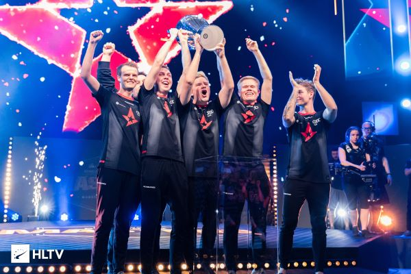
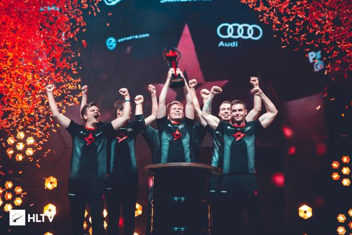
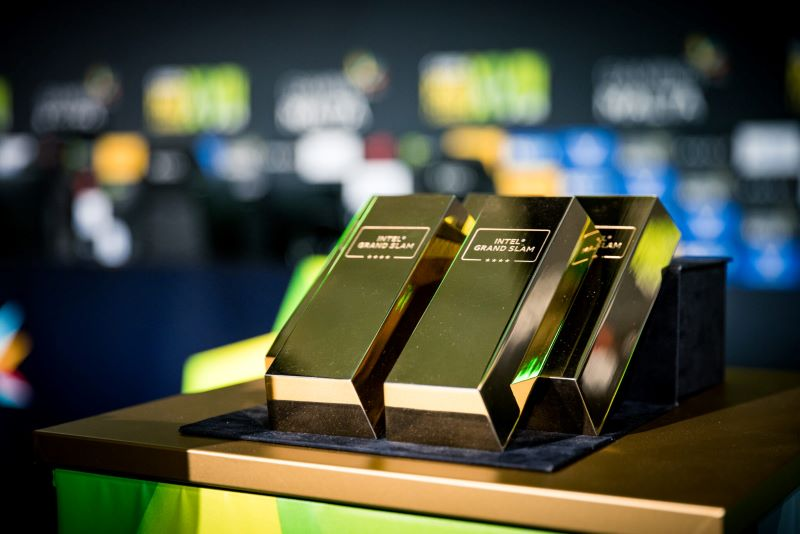
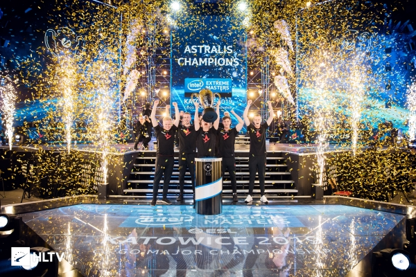

Après le départ soudain de Kjaerbye, Astralis avait besoin d'un remplaçant
et dans un geste surprenant, ils décident de prendre Emil "Magisk" Reif.
Avec leur nouveau joueur, cela a officiellement marqué le début d'une nouvelle ère pour l'équipe
qu'on appelle souvent "Astralis 2.0" et à ce moment là, ils ont rassemblé une lineup composé de 5 danois
qui iraient pour devenir les divins de Counter-Strike.
Ce nouvel Astralis a pris d'assaut 2018 en commençant par gagner les Dreamhack
Masters Marseille en Avril 2018 lors de la grande finale contre Na'Vi.
Y compris cette victoire, Astralis a remporté 4 des 7 prochains tournois majeures où
ils ont participés au FACEIT London Major 2018 en septembre 2018.

FACEIT London Major 2018

Dans ce tournoi, ils ont sprintés jusqu'à la grande finale où ils affrontent
à nouveau Na'Vi en BO3 où ils les ont complètement balayé d'une facilité encore
jamais vu à ce moment là :
Score
Map (Carte)
16-6
Nuke
16-9
Overpass
Avec cette victoire, ils sont devenus plus qu'une équipe qui a brisé leur malédiction.
Ils ont montré à tout le monde que c'était leur ère de Counter-Strike.
L'Intel Grand Slam, 3 victoires d'affilée au Major et propulsion au sommet
Intel Grand Slam
Alors qu'ils accumulent de plus en plus de victoires, il est devenu clair
qu'ils sont devenus les nouveaux rois de Counter-Strike. et ils ont
solidifé leur emprise sur ce titre quand ils ont remporté la saison 8
de l'ESL Pro League et on obtenu le joyau de la couronne des prix en
espèces sur Counter-Strike : l'Intel Grand Slam.
Voici la récompense des joueurs :

Ils ont accompli tout ce dont une équipe Counter-Strike pouvait
rêver en 2018.
Mais c'était comme s'ils n'avaient pas bronché, 2 Majors n'étaient
pas suffisant pour cette équipe ils étaient sur le point d'enfoncer
le dernier clou dans le cerceuil de tous leurs adversaires.
IEM Katowice Major 2019

En remportant les IEM Katowice Major 2019, ils deviennent la 2e équipe de l'histoire
de Counter-Strike à remporter 3 majors et ils remportent 2 Majors consécutives.
Ils battent 2-0 en BO3 ENCE :
Score
Map (Carte)
16-11
Train
16-4
Inferno
Starladder Berlin Major 2019
Puis, à Starladder Berlin en 2019, ils ont fait une déclaration qui résonnera
dans les catacombes de l'histoire de Counter-Strike pendant des années à venir.
Ils battent haut la main AVENGAR 2 à 0 en grande finale :